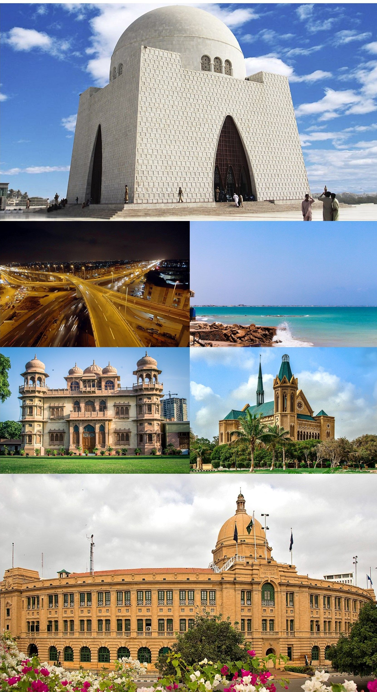

- Faisalabad
- Lahore
- Multan
- Peshawar
- Karachi
|
Karachi
Go Back
Karachi is the largest city in Pakistan and one of
the twelve largest cities in the world. It is the
capital of Sindh
province and a beta-global city. It is Pakistan’s
premier industrial and financial centre, with an
estimated GDP
of $164 billion (PPP) as of 2019. Karachi is the
most populous city in Pakistan, with a population of
over 14
million. Karachi is a highly cosmopolitan city in
Pakistan, with a rich diversity of languages,
ethnicities, and religions.
Moreover, It is also one of the most secular and
socially liberal cities in the country. Situated on
the Arabian Sea, Karachi serves
as an important transport hub, housing Pakistan’s
largest seaports, Jinnah International Airport, and
Bin Qasim Port. The historical
cultural and natural beauty that Karachi has to
present, is all worth it. 10 places to visit in
Karachi, and you should, by all means,
consider visiting!

|